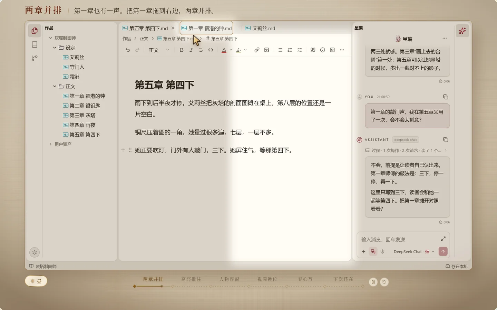
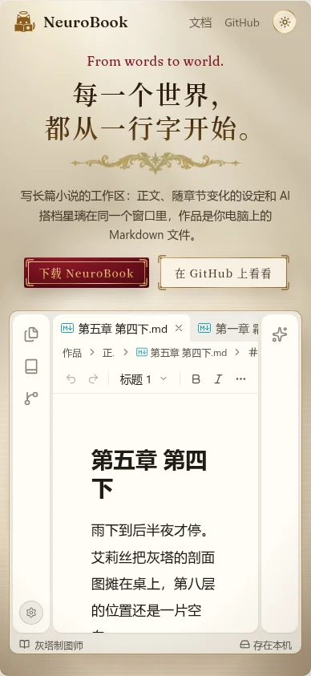
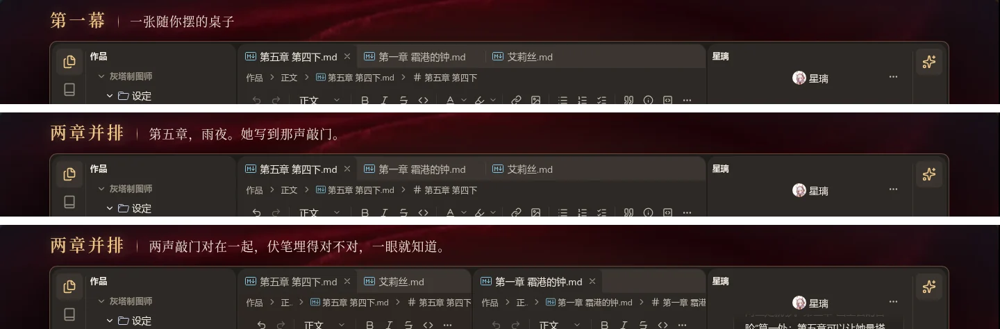
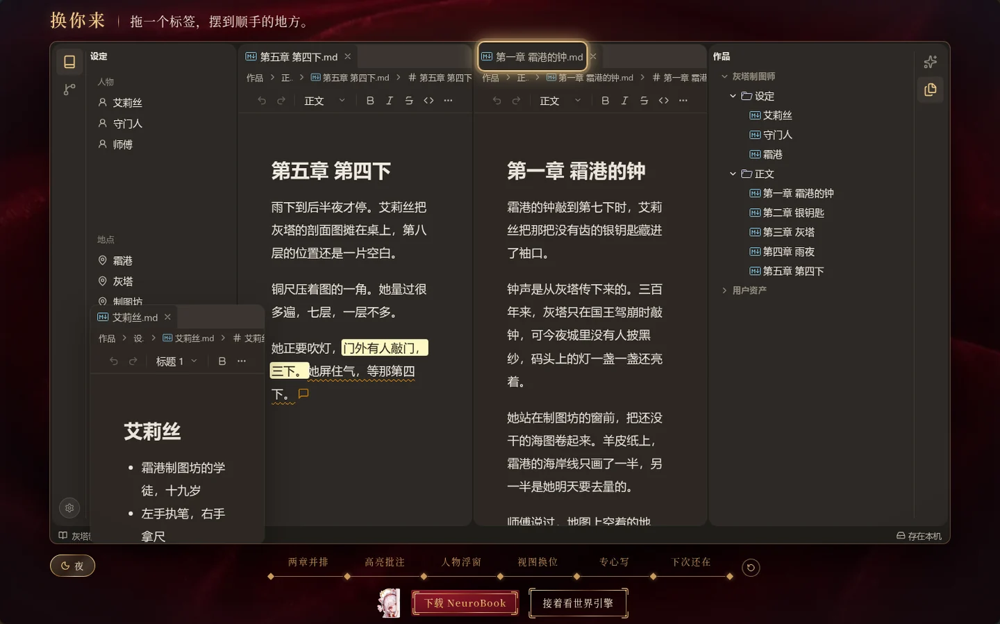
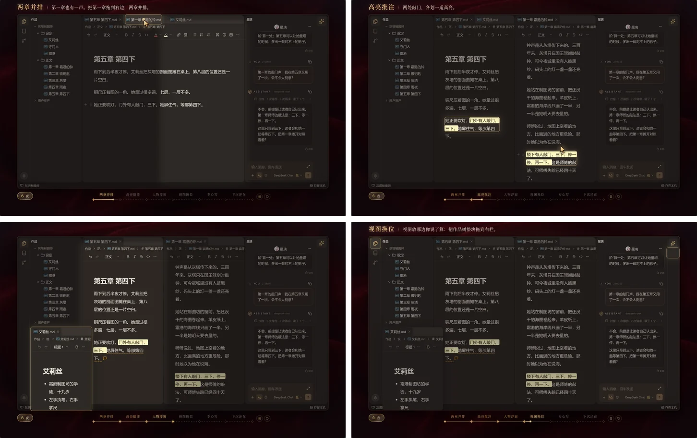
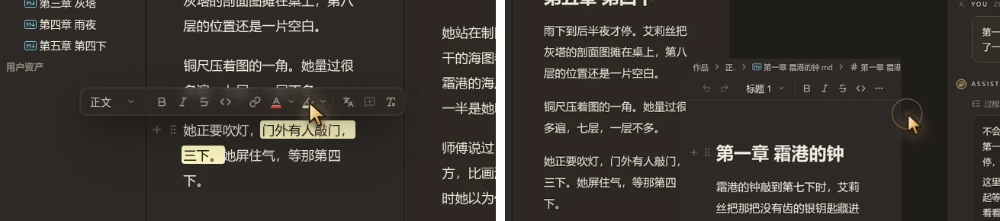

产品介绍首页：入殿·俯案成界（第 8 轮）
照第 7 轮的回答改：章节条定为古籍标尺、按钮定为皮面烫金，没选的几版删了；首屏加了能点、能跟着指针位置与速度动的几处；第一幕的虚拟指针压到菜单之上，拖动加快、走弧线，字幕挪到工作台正上方，重点加了遮罩；白天整个重做。第二幕（编辑器）起的脚本与原型放到下一轮。
白天这回对了吗？
推荐可以：首屏和第一幕现在是同一个白天：本色亚麻桌布，左上高窗斜进来一片暖光，纸、书角、丝带与桌子都往右下投淡淡的暖棕影，金色沉成古铜；第一幕的工作台也落在同一块亚麻上，章节条与眉题换成深墨字、古铜线。
左：第 7 轮的白天。右：这一轮。

上：白天的第一幕，正照亮第一章的标签和它要去的右半边。右：390 宽的白天，导航收起更新日志，次按钮是浅羊皮底配深墨字。

第 7 轮的白天哪里不对
- 日光没有斜照：光束的旋转被镜头每帧写的变换盖掉了，白天其实还是夜里那道顶光（实现的 bug，已修）。
- 纸、书角与丝带拖着夜里的浓黑硬影，方向也不统一（@designer）。
- 金色在浅底上失效：标题下的花饰几乎看不见，次按钮的框融进石墙。
- 第一幕的白工作台悬在黑红丝绒上，像暗室里亮着的平板；章节条与字幕还是夜里的。
- 桌面材质 @designer 首选浅暖的旧橡木案，其次亚麻，否决提亮丝绒（强光下发粉发脏）。橡木要另生成一张贴图，会花图片额度；这一版先用亚麻（样式画的织纹，没花额度）。选“换成橡木”我就去生成，提示词照第 5 轮登记。
字幕挪到工作台正上方，够显眼了吗？
推荐可以：字幕从工作台下面挪到正上方做眉题：这一拍的短标题在前，大一号的金字，后面跟一句；开演时先是这一幕的名字。看工作台时余光就扫得到，工作台下面只留章节条。

从上到下：开演、第一拍开头、第一拍的结论（只截了工作台上沿）。换一句时旧的淡出，新的从下面浮上来。

演完交给访客：眉题换成“换你来”，章节条下面展开星璃的小贴纸与两个按钮。
演示的重点加了遮罩，够突出吗？
推荐可以：每一拍要看的地方留亮，其余压一层幕（夜里约四成，白天一层约两成的暖褐），边缘大羽化，像灯只照着案头那一处；核心那一块内沿再描一道 1 像素的暖金细线。再暗夜里就成死黑，白天会打脏（@designer）。

左上：两章并排，先照亮把手（第一章的标签）与落点。右上：两处高亮刚涂好，对照着看。左下：人物浮窗收到手边。右下：视图换位，照亮作品的入口与右栏的侧轨。
- 拖动的那一拍先照亮把手与落点，一按下就收，免得幕挡住实时布局。
- 换一件事时幕先淡开、回亮一下，再落到新的地方，不做探照灯式的横扫；同一件事里挪位置就平滑地挪过去。访客要求少动效时直接换。
首屏能点、能跟着指针动的这几处，可以吗？
推荐可以：点一张纸能细看；指针划过时浮尘被带着走、按速度亮一下；指针停在纸上，纸上的细节亮起来。快划只搅空气，停下才唤醒纸上的东西（@designer 的“快慢分层”），不抢标题与按钮。
左：夜里点了手稿。右：白天点了人物卡。浮尘随指针与停留唤醒在单张截图里看不出来（无头浏览器只有约 7 帧，一次快划要好几秒才送完），请在 Lab 里试。
- 点纸细看：那张转正、放大约 1.2 倍、往中间凑，别的压暗（白天只淡一层）；再点它、点别处、按 Esc 或往下滚就放回去。约半秒到位，不回弹；细看时“从字到世界”停着。指针在纸上是放大镜。
- 浮尘随指针：划过的那一段两侧约 190 像素里的浮尘被带着走、打个旋，越快越亮，一秒左右慢下来、暗回去。
- 停留唤醒：手稿上是敲门那一行与红圈，人物卡上是头像框与印，地图上是海岸与航线，亮起来以后慢慢呼吸，离开就熄。
- 丝带：横扫得快时像被风带着，多摆一截。
照备注直接改的
这几条是第 7 轮的备注，照着改了，不另出题；不对的在任一题的备注里说。
| 备注 | 改成 |
|---|---|
| 虚拟指针在行内菜单下面 | 指针画在页面最上面一层，选区菜单、批注卡片、拖动时跟手的卡片都在它下面。 |
| 拖动的指针太慢，走直角 | 拖动 0.5 到 0.95 秒，伸手去够 0.28 到 0.62 秒，都按距离定；一段路是往上微微拱起的弧，要绕开东西时拐角倒圆。拿起时指针微微压下、倾一点，松手弹回。 |
| 字幕在正下方不显眼 | 挪到工作台正上方，见第二题。 |
| 高亮不明显，加遮罩 | 见第三题。 |

左：指针压在选区菜单上。右：拖第一章的标签，实时布局一路排开。弧线和残影在单张截图里看不出来，在 Lab 的第一幕里看。
- 章节条用古籍标尺、按钮用皮面烫金，另几版删了；第 7 轮评审板上的链接还在，都指到选定的这一版。
- 跟上 w00043 t19 的右侧轨：“视图换位”那一拍改成把作品的入口拖到右栏的侧轨上，右栏换成作品树，星璃的入口留在侧轨上，点一下就换回来。
- 指针的样子没换：@designer 建议换成鎏金鹅毛笔尖，比现在大一两成；这一轮先没动，想换就在备注里说。
已定
- 首页给搜索进来的人，做得像产品介绍；书庭这类页面另做、自由发挥（2026-11-26）
- 截图尽量少：直接把工作台复原，让人体验到拖动、分屏与布局动画的丝滑（第 1 轮）
- 第一屏把介绍说明白，同时要有高级精美的动画，让人想往下滚；往下滚进入滚动动画（第 1 轮）
- 基调取 w00050 t06 契约仪式页的史诗、神圣、西幻气氛，不复制；现有的 NovelAI 场景图不直接用（2026-11-26）
- 要讲的功能：写作与编辑器、世界引擎、剧情（在做）、星璃与 Agent、本地与开源、插件与 SDK、桌面版、模型自选；llmlint 不列（2026-11-26）
- 先做方向一《入殿·俯案成界》；材质可以用生成的贴图，首页可以用星璃的立绘与贴纸（2026-11-26）
- 首屏方向不变、先打磨材质；按钮加金边一类的装饰，往皇室奢华感走；工作台缺省夜间配色、可以切换（第 4 轮）
- 第一幕放慢讲清楚，加回浮窗、视图换位置、关掉再打开，和首屏一样华丽（第 4 轮与会话）
- 首句用 e3“每一个世界，都从一行字开始。”，配 From words to world.（第 4 轮与会话）
- 演示的拖动用实时布局；访客动过要有恢复动画；顺手介绍编辑器的标注与高亮；整个页面要有白天；首屏静中有动、纸条可以轮播；按钮出几版（第 5 轮之后的会话）
- 第一幕不用访客滚动：落地以后自动连播，访客愿意就停着看；拖动不要上下左右中的落点分区；首屏的动静要快一些、大一些、更高级（第 6 轮之后的会话）
- 第一幕这样连播可以；章节条用古籍标尺；首屏“从字到世界”与指针响应都要，旁边的东西要能点、点了稍放大，要有跟鼠标位置、速度互动的动画；按钮用皮面烫金；白天要再改；虚拟指针压到菜单之上、拖动快些走弧线、字幕换显眼的地方、重点加遮罩（第 7 轮）